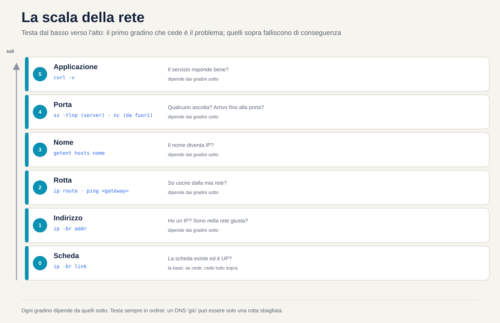
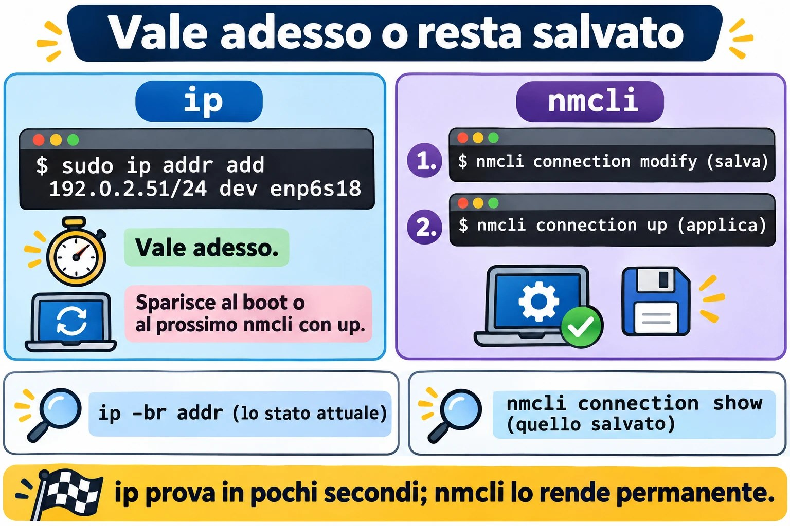
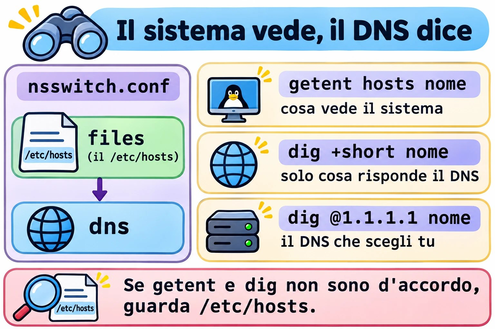

Lezione 2.4 · La rete di tutti i giorni
Quarta lezione del Modulo 2. La richiesta di assistenza arriva in tre modi: "internet è caduta", "il sistema non si apre" e "il server è sparito dalla rete". Quasi mai è quello che dice il cliente. Un nome che non si risolve sembra internet caduta. Un servizio che ascolta solo sulla propria macchina sembra un server spento. Un IP messo a mano sembra funzionare fino al prossimo boot. Oggi costruisci una scala a sei gradini e la sali sempre nello stesso ordine: scheda, indirizzo, rotta, nome, porta, applicazione. Il primo gradino che cede è il problema. Alla fine leggi un messaggio di errore di rete e sai già su quale gradino guardare.
| Scheda | Lezione 2.4 |
|---|---|
| Modulo | M2 · Sistema, utenti e permessi, lezione 4 di 8 |
| Quando | Settimana 5 |
| Alla fine sei in grado di | Leggere la configurazione di rete di qualsiasi server con ip, hostnamectl e /etc/resolv.conf; diagnosticare "senza rete" gradino per gradino; vedere chi ascolta su quale porta e su quale indirizzo con ss; testare una porta di un'altra macchina senza installare nulla; spiegare la differenza tra getent e dig; cambiare un indirizzo in modo temporaneo con ip e permanente con nmcli; leggere cosa dice ogni messaggio di errore sul gradino che ha ceduto |
| Prerequisiti | Lezione 2.3 (processi, PID; journalctl); lezioni 1.5 e 1.6 (grep, awk semplice, pipe) |
| Durata | Circa 2h |
| Snapshot | m2a4-inicio e m2a4-fim su entrambe le VM |
1 · Riscaldamento
Tre domande, a mente. Scrivi le risposte; le soluzioni le trovi alla fine.
- In Windows,
ipconfig /allmostra indirizzo, maschera, gateway e DNS in una sola schermata. Scommetti: in Linux esiste un comando che li mostra tutti e quattro insieme? ping 1.1.1.1risponde, ma il browser dice "server non trovato". Scommetti: cosa è rotto?- Cambi l'IP di un server con un comando, provi e funziona. Scommetti: dopo il prossimo boot ha ancora il nuovo IP?
2 · Perché conta
La rete è l'argomento su cui il tecnico tira di più a indovinare. Riavvia il servizio, riavvia il router, riavvia il server, e a volte torna a funzionare, senza che nessuno sappia perché. Il problema ricompare la settimana dopo. Chi risolve davvero non conosce più protocolli: ha un ordine e non salta gradini. Se il server non ha un IP, è inutile testare il DNS. Se il nome non si risolve, è inutile guardare il firewall del sito.
La seconda cosa che distingue il professionista è leggere il messaggio di errore per intero. "Connection refused", "No route to host", "Name or service not known" e un comando che resta semplicemente bloccato sono quattro problemi diversi, su quattro gradini diversi. Il messaggio dice già dove guardare; quasi nessuno lo legge.
E c'è la trappola del temporaneo. Il comando ip cambia la rete all'istante, e quello che cambia sparisce al boot. Il tecnico sistema tutto di sera con ip, il server si riavvia di domenica per un aggiornamento, e il lunedì mattina è tutto rotto di nuovo. Oggi impari la differenza tra ciò che vale adesso e ciò che è salvato, e a controllare entrambe le cose.
3 · Modello mentale
La rete è una scala. Sali dal basso verso l'alto, un gradino alla volta. Il primo che cede è il problema; quelli sopra cedono di conseguenza.
5 Aplicação curl -v, o próprio programa "o serviço responde direito?"
4 Porta ss -tlnp (no servidor) "alguém escuta? em que endereço?"
/dev/tcp ou nc (de fora) "consigo chegar até a porta?"
3 Nome getent hosts nome "o nome vira IP?"
2 Rota ip route; ping no gateway "sei sair da minha rede?"
1 Endereço ip -br addr "tenho IP? na rede certa?"
0 Placa ip -br link "a placa existe e está UP?"Quattro idee portano la lezione:
| Idea | Cosa significa | Conseguenza |
|---|---|---|
| Scala | Ogni gradino dipende da quelli sotto | Un DNS "fuori uso" può essere una rotta sbagliata; testa dal basso verso l'alto |
| Adesso × salvato | Il kernel tiene la configurazione che vale adesso; NetworkManager (o ifupdown) tiene quella che torna al boot | ip cambia solo l'adesso; nmcli con mod cambia solo il salvato, finché non lo applichi |
| Il nome ha un ordine | Il sistema cerca un nome prima in /etc/hosts e poi nel DNS, nell'ordine di /etc/nsswitch.conf | getent mostra ciò che vedono i programmi; dig interroga solo il DNS |
| Ascoltare ha un indirizzo | Un servizio ascolta su una porta e su un indirizzo: 127.0.0.1 solo per la macchina stessa, 0.0.0.0 per tutte le interfacce | "La porta è aperta" non basta: aperta per chi? |


4 · Concetto a strati
Essenziale
Chi sono io in rete. Quattro comandi rispondono a tutto ciò a cui risponde ipconfig /all:
hostnamectl # o nome da máquina, o sistema, se é VM
ip -br link # as placas: nome, estado (UP/DOWN), MAC
ip -br addr # as placas com os endereços, um por linha
ip route # as rotas; a linha "default via" é o gateway
cat /etc/resolv.conf # os servidores DNS ("nameserver") e o domínio de busca-br (brief) lascia una riga per scheda. Senza, ip addr mostra tutto, compresi IPv6, tempo di validità e flag. Usa quello corto per dare un'occhiata e quello lungo quando ti serve il dettaglio.
$ ip -br addr
lo UNKNOWN 127.0.0.1/8 ::1/128
enp6s18 UP 10.1.0.51/24 fe80::be24:11ff:fe2a:51/64| Pezzo | Significato |
|---|---|
enp6s18 | Il nome della scheda: en = Ethernet, p6s18 = dove si trova sul bus. I nomi vecchi erano eth0 |
UP | La scheda è accesa e ha il segnale. DOWN = spenta; NO-CARRIER (in ip link) = accesa, senza cavo o senza segnale |
10.1.0.51/24 | L'indirizzo e la maschera in notazione corta: /24 = 255.255.255.0, la rete va da 10.1.0.0 a 10.1.0.255 |
fe80::.../64 | L'indirizzo IPv6 link-local, che ogni scheda crea da sola; vale solo dentro la rete locale |
lo | L'interfaccia di loopback: la macchina che parla con se stessa, sempre 127.0.0.1 |
Testare se arriva. ping manda pacchetti ICMP e aspetta la risposta. Sempre con -c, altrimenti non si ferma:
ping -c 3 10.1.0.52 # 3 pacotes e paraUn ping che risponde prova che i gradini da 0 a 2 funzionano fino a quell'indirizzo. Un ping che non risponde non prova che la macchina sia spenta: molti firewall bloccano l'ICMP. Se non c'è risposta, passa al test della porta.
Chi ascolta. ss mostra le connessioni e le porte aperte:
sudo ss -tulpn # t=TCP u=UDP l=escutando p=processo n=números (sem tradução)
ss -tn # conexões TCP estabelecidas agoraNetid State Local Address:Port Peer Address:Port Process
tcp LISTEN 0.0.0.0:22 0.0.0.0:* users:(("sshd",pid=812,fd=3))
tcp LISTEN [::]:22 [::]:* users:(("sshd",pid=812,fd=4))
udp UNCONN 127.0.0.1:323 0.0.0.0:* users:(("chronyd",pid=701,fd=5))La colonna che conta è Local Address. 0.0.0.0:22 e [::]:22: SSH ascolta su tutti gli indirizzi IPv4 e IPv6, chiunque può raggiungerlo. 127.0.0.1:323: chronyd ascolta solo per la macchina stessa; da fuori non arriva nessuno. Senza sudo, la colonna Process resta vuota per i processi di altri utenti.
Trovare un nome. getent hosts chiede nello stesso modo in cui chiedono i programmi:
getent hosts rockylinux.org
getent hosts localhostSe getent non risponde, nessun programma riuscirà a usare quel nome.
Intermedio
nmcli, NetworkManager da riga di comando. Su Rocky, a custodire la configurazione di rete è NetworkManager. Lavora con connessioni (profili salvati) applicate a dispositivi (le schede):
nmcli device status # as placas e a conexão aplicada em cada uma
nmcli connection show # os perfis; os ativos têm DEVICE preenchido
nmcli connection show "NOME" | grep ipv4 # o que o perfil diz sobre IPv4Il nome della connessione non coincide sempre con quello della scheda: può essere enp6s18, System enp6s18 o Wired connection 1. Scoprilo prima di toccare qualcosa:
CON=$(nmcli -g NAME,DEVICE connection show --active | awk -F: '$2=="enp6s18" {print $1}')
echo "$CON"Cambiare si fa sempre in due tempi: salvare e poi applicare.
sudo nmcli connection modify "$CON" +ipv4.addresses 192.0.2.51/24 # grava (o + acrescenta)
sudo nmcli connection up "$CON" # aplica| Proprietà | A cosa serve |
|---|---|
ipv4.method | auto (DHCP) o manual (fisso) |
ipv4.addresses | Indirizzi con maschera, separati da virgola; + aggiunge, - rimuove |
ipv4.gateway | Il gateway predefinito |
ipv4.dns | I server DNS |
ipv4.ignore-auto-dns | yes = ignora il DNS che arriva dal DHCP |
connection.autoconnect | yes = si attiva da sola al boot |
Il profilo è salvato in /etc/NetworkManager/system-connections/NOME.nmconnection, un file di testo organizzato in sezioni. I server aggiornati da versioni vecchie possono avere ancora il formato precedente, in /etc/sysconfig/network-scripts/ifcfg-*. nmcli gestisce entrambi; non modificare il file a mano se nmcli risolve.
Ciò che vale adesso × ciò che è salvato. ip parla direttamente con il kernel:
sudo ip addr add 192.0.2.51/24 dev enp6s18 # vale agora; some no boot ou no próximo "nmcli con up"
sudo ip addr del 192.0.2.51/24 dev enp6s18Usa ip per provare un'idea in pochi secondi. Usa nmcli per renderla definitiva. Dopo qualsiasi modifica permanente, controlla entrambe le cose: ip -br addr (l'adesso) e nmcli connection show "$CON" | grep ipv4.addresses (il salvato).
L'ordine dei nomi. Il file /etc/nsswitch.conf dice dove cercare:
hosts: files dns myhostnamefiles è /etc/hosts; dns sono i server di /etc/resolv.conf. Vince chi risponde per primo. Una riga dimenticata in /etc/hosts batte il DNS dell'intera azienda, e solo quella macchina risulta "sbagliata". Per questo esistono due comandi diversi:
| Comando | Chiede a | Usalo per |
|---|---|---|
getent hosts nome | Lo stesso ordine che usano i programmi (/etc/hosts, poi DNS) | Sapere cosa vede il sistema |
dig nome, dig +short nome | Solo al server DNS, ignorando /etc/hosts | Sapere cosa risponde il DNS |
dig @1.1.1.1 nome | A un server DNS scelto da te | Confrontare il DNS aziendale con uno esterno |
Se i due non concordano, la risposta sta in /etc/hosts. dig si trova nel pacchetto bind-utils (Rocky) o bind9-dnsutils (Debian).
Testare una porta da fuori, senza installare nulla. Bash apre una connessione TCP se reindirizzi verso /dev/tcp/HOST/PORTA:
timeout 3 bash -c '</dev/tcp/10.1.0.51/22' && echo aberta || echo fechadaCon nc installato (nmap-ncat su Rocky, netcat-openbsd su Debian): nc -zv 10.1.0.51 22. Per il web, curl -v http://host:porta/ mostra ogni fase: risoluzione, connessione, richiesta, risposta.
Il percorso. tracepath 1.1.1.1 mostra i router fino alla destinazione, uno per riga, senza bisogno di root. Dove i numeri si fermano, il percorso si è interrotto. mtr, se installato, fa lo stesso in tempo reale.
Il nome della macchina. sudo hostnamectl set-hostname rocky-lab salva il nome in /etc/hostname e lo applica subito. Il nome nel prompt cambia al login successivo.


Ponte Windows
| In Windows | In Linux | Cosa cambia |
|---|---|---|
ipconfig /all | ip -br addr, ip route, cat /etc/resolv.conf | Tre comandi brevi invece di uno lungo |
ipconfig /release e /renew | sudo nmcli connection up "$CON" | Riapplica l'intero profilo, DHCP compreso |
ipconfig /flushdns | In genere niente: Rocky e Debian non tengono una cache DNS di default | Se systemd-resolved è attivo: resolvectl flush-caches |
netstat -ano | sudo ss -tulpn | ss mostra già il nome del processo, non solo il PID |
Test-NetConnection host -Port 443 | timeout 3 bash -c '</dev/tcp/host/443'; nc -zv host 443 | |
tracert | tracepath, traceroute, mtr | |
nslookup | dig, host; getent hosts per vedere cosa usa il sistema | |
C:\Windows\System32\drivers\etc\hosts | /etc/hosts | Stessa idea, stesso pericolo |
| Proprietà della scheda, IPv4 | nmcli connection modify | Salvare e applicare sono due passi |
| Windows Defender Firewall | firewalld (Rocky); nftables diretto (Debian) | Vedremo il firewall a fondo nel modulo sulla sicurezza |
Avanzato
I messaggi di errore indicano il gradino. Impara a memoria questa tabella; risolve metà delle richieste:
| Messaggio | Cosa è successo | Gradino |
|---|---|---|
Name or service not known, Temporary failure in name resolution, Could not resolve host | Il nome non è diventato un IP | 3 · Nome |
Network is unreachable | Non c'è una rotta per quella rete: niente gateway o niente IP | 1 o 2 |
No route to host | Nella rete locale nessuno ha risposto all'ARP; oppure un firewall ha rifiutato il pacchetto (firewalld risponde così) | 2, o firewall |
Connection refused | Il pacchetto è arrivato alla macchina e nessuno ascolta su quella porta, su quell'indirizzo | 4 · Porta |
Il comando resta bloccato e finisce in timed out | Qualcosa lungo il percorso ha scartato il pacchetto in silenzio, in genere un firewall | Firewall sul percorso |
"Refused" è, curiosamente, una buona notizia: la macchina è viva e la rete è arrivata fino a lei.
ARP, i vicini. Dentro la stessa rete, la macchina scopre il MAC del vicino tramite ARP prima di mandare qualsiasi cosa. ip neigh mostra la tabella: REACHABLE è un vicino che ha risposto, FAILED è un vicino che non ha risposto. Un gateway in FAILED significa che il problema sta prima di qualsiasi router: cavo, VLAN, scheda virtuale sul bridge sbagliato.
Maschera sbagliata. Un server con 10.1.0.51/16 invece di /24 crede che 10.1.5.20 sia un vicino e prova a parlargli direttamente, senza gateway. L'ARP non risponde e compare No route to host solo per una parte della rete. Controlla la maschera prima di dare la colpa al firewall.
Due rotte predefinite. Se ip route mostra due righe default, vale quella con metric più bassa. I server con due schede hanno spesso questo problema nascosto: funziona finché non vince la scheda sbagliata.
IPv6 nascosto. Molti programmi provano prima IPv6. Se il nome si risolve in un indirizzo IPv6 e la rete IPv6 è rotta, il programma ci mette un po' a ripiegare su IPv4 e sembra lento. getent ahosts nome mostra tutti gli indirizzi, v4 e v6; curl -4 forza IPv4 per confrontare.
ss con filtro. ss -tn state established '( dport = :443 )' mostra solo le connessioni in uscita verso la porta 443; ss -s dà il riepilogo. Su un server che "si pianta", migliaia di connessioni in TIME-WAIT o CLOSE-WAIT raccontano una storia.
5 · Rocky × Debian
| Cosa | Rocky 9 | Debian 13 |
|---|---|---|
| Chi custodisce la configurazione | NetworkManager, sempre | Dipende dall'installazione: un server senza interfaccia grafica di solito usa ifupdown; se NetworkManager è installato, prende il controllo lui. Verifica con systemctl is-active NetworkManager |
| Dove viene salvata | /etc/NetworkManager/system-connections/*.nmconnection | ifupdown: /etc/network/interfaces e /etc/network/interfaces.d/. NetworkManager: lo stesso posto di Rocky |
| Applicare una modifica | nmcli connection up "$CON" | ifupdown: riavviare la scheda (taglia l'SSH) o riavviare la macchina |
/etc/resolv.conf | Scritto da NetworkManager | Scritto dal client DHCP o a mano, con ifupdown; da NetworkManager, se è attivo |
systemd-resolved | Non è attivo di default | Non è attivo di default |
dig | dnf install bind-utils | apt install bind9-dnsutils |
nc | dnf install nmap-ncat | apt install netcat-openbsd |
tracepath | Già installato (iputils) | apt install iputils-tracepath |
| Firewall attivo dopo l'installazione | firewalld, che rifiuta ciò che non è stato aperto | Nessuno |
ifconfig, netstat, route | Non ci sono; pacchetto net-tools, obsoleto | Non ci sono; pacchetto net-tools, obsoleto |
6 · Lab guidato
Esegui ogni passo su rocky-lab e ripetilo su debian-lab. Dove Debian cambia, il passo lo segnala. Tieni aperto un terminale SSH su ogni VM: diversi passi testano una VM a partire dall'altra.

Passo 0 · Snapshot
In Proxmox, crea lo snapshot m2a4-inicio di entrambe le VM. In questo lab tocchi la rete via SSH: se perdi l'accesso, la console di Proxmox e lo snapshot sono la tua via di ritorno.
Passo 1 · Chi sono io in rete
Su rocky-lab:
hostnamectl
ip -br link
ip -br addr
ip route
cat /etc/resolv.confScrivi una riga nel tuo diario, nel formato nome · placa · IP/máscara · gateway · DNS. Per esempio: rocky-lab · enp6s18 · 10.1.0.51/24 · gateway ? · DNS ?. I ? sono ciò che rispondono il tuo ip route e il tuo resolv.conf. Ripeti su debian-lab.
Ora scopri chi custodisce questa configurazione:
systemctl is-active NetworkManager
nmcli device status 2>/dev/nullSu rocky-lab la risposta è active, e enp6s18 compare con una connessione. Su debian-lab, annota ciò che compare: se NetworkManager è inactive, la configurazione sta in /etc/network/interfaces:
cat /etc/network/interfaces
ls /etc/network/interfaces.d/Un iface enp6s18 inet dhcp significa DHCP; un iface enp6s18 inet static seguito da address significa IP fisso.
Passo 2 · Salire la scala
Su rocky-lab, un gradino alla volta, dal basso verso l'alto:
ip -br link show enp6s18 # 0 · placa UP?
ip -br addr show enp6s18 # 1 · tem IP?
GW=$(ip route | awk '/^default/ {print $3; exit}'); echo "$GW"
ping -c 3 "$GW" # 2 · chego no gateway?
ping -c 3 1.1.1.1 # 2 · saio da rede?
getent hosts rockylinux.org # 3 · o nome vira IP?
curl -sI https://rockylinux.org | head -1 # 5 · o serviço responde?Ogni riga che risponde sblocca quella successiva. Su debian-lab, sostituisci il nome con debian.org; se manca curl, sudo apt install curl.
Se il ping al gateway non risponde ma ping 1.1.1.1 sì, il gateway semplicemente blocca l'ICMP: il gradino 2 è a posto, perché sei uscito dalla rete. È il primo esempio del perché un ping senza risposta, da solo, non prova nulla.
Decidi 1 · Quale gradino. Su un server di un cliente, il ping al gateway risponde, ping 1.1.1.1 risponde, e ping rockylinux.org dice Name or service not known. Dov'è il problema?
- A) Nel gradino 2: la rotta predefinita è sbagliata.
- B) Nel gradino 3: la risoluzione dei nomi.
- C) Nel firewall del sito rockylinux.org.
- D) Nel gradino 0: la scheda ha un problema intermittente.
Scegli un'opzione prima di continuare.
| Se hai scelto | Risultato | Perché |
|---|---|---|
| A | ❌ Sbagliata | ping 1.1.1.1 ha risposto: i pacchetti escono e tornano. La rotta è a posto. |
| B | ✅ Giusta | I gradini da 0 a 2 sono passati. Ciò che ha ceduto è stato trasformare il nome in IP. Passo successivo: cat /etc/resolv.conf, getent hosts rockylinux.org e dig rockylinux.org. |
| C | ❌ Sbagliata | Il ping non ha nemmeno mandato un pacchetto al sito: non ha scoperto l'indirizzo. Il messaggio riguarda il nome, non la connessione. |
| D | ❌ Sbagliata | Una scheda con problemi avrebbe fatto cadere anche i primi due ping. |
Da ricordare: il messaggio dice il gradino. "Name or service not known" riguarda sempre il nome.
Passo 3 · Chi ascolta, e per chi
Su rocky-lab:
sudo ss -tulpnPer ogni riga, rispondi a tre domande: quale programma (colonna Process), quale porta e per chi (colonna Local Address). Dovresti vedere sshd su 0.0.0.0:22 e [::]:22, e chronyd su 127.0.0.1:323 e [::1]:323. Poi, le connessioni aperte adesso:
ss -tn
sudo ss -tnp state established '( sport = :22 )'La seconda riga mostra la tua connessione SSH: il tuo IP (quello del tuo PC) nella colonna Peer, e il processo sshd che la gestisce. Ripeti su debian-lab, dove SSH compare come sshd nel processo ma l'unit si chiama ssh.
Decidi 2 · Per chi. ss -tulpn mostra udp UNCONN 127.0.0.1:323 ... users:(("chronyd",...)). Chi può mandare pacchetti a quella porta?
- A) Solo la macchina stessa.
- B) Qualsiasi macchina della rete 10.1.0.0/24.
- C) Qualsiasi macchina, purché il firewall apra la porta 323.
- D) Nessuno, perché lo stato è
UNCONN.
Scegli un'opzione prima di continuare.
| Se hai scelto | Risultato | Perché |
|---|---|---|
| A | ✅ Giusta | 127.0.0.1 è il loopback. Il kernel consegna a quel socket solo pacchetti nati sulla macchina stessa. È così che chronyc parla con chronyd senza esporre nulla. |
| B | ❌ Sbagliata | Per questo dovrebbe ascoltare su 10.1.0.51 o su 0.0.0.0. |
| C | ❌ Sbagliata | Il firewall non cambia su quale indirizzo ascolta il programma. Aprire la 323 nel firewall non fa rispondere chronyd dall'esterno. |
| D | ❌ Sbagliata | UNCONN è lo stato normale di un socket UDP che aspetta pacchetti: UDP non ha connessione. |
Da ricordare: porta aperta significa porta e indirizzo. 127.0.0.1 = solo io; 0.0.0.0 o [::] = tutti quelli che la rete e il firewall lasciano passare.

Passo 4 · Testare una porta da fuori
Ora una VM testa l'altra. Da debian-lab, testando rocky-lab:
timeout 3 bash -c '</dev/tcp/10.1.0.51/22' && echo aberta || echo fechada
timeout 3 bash -c '</dev/tcp/10.1.0.51/2222' && echo aberta || echo fechadaLa 22 risponde aberta. La 2222 risponde fechada, ma leggi il messaggio prima del fechada: deve essere No route to host. Ora il contrario, su rocky-lab, testando debian-lab:
timeout 3 bash -c '</dev/tcp/10.1.0.52/22' && echo aberta || echo fechada
timeout 3 bash -c '</dev/tcp/10.1.0.52/2222' && echo aberta || echo fechadaLa 2222 di debian-lab risponde Connection refused. Stessa porta, nessuno in ascolto in entrambe, messaggi diversi. La differenza è il firewall: rocky-lab ha firewalld attivo, che rifiuta ciò che non è stato aperto e risponde "non c'è una rotta". debian-lab non ha firewall, e il kernel stesso risponde "qui non ascolta nessuno". Verifica:
sudo firewall-cmd --state # na rocky-lab: running
sudo firewall-cmd --list-all # serviços liberados: ssh, cockpit, dhcpv6-clientDecidi 3 · Refused. Un cliente dice "il sistema non si apre". Dalla tua macchina, il test sulla porta 8443 del server risponde subito Connection refused. Cosa ti dice?
- A) Il pacchetto è arrivato al server e nessun programma ascolta sulla 8443 su quell'indirizzo.
- B) Un firewall lungo il percorso sta bloccando la 8443.
- C) Il server è spento.
- D) Il nome del server non si è risolto.
Scegli un'opzione prima di continuare.
| Se hai scelto | Risultato | Perché |
|---|---|---|
| A | ✅ Giusta | "Refused" è la risposta del kernel del server: il pacchetto è arrivato, ma nessuno risponde. Vai sul server ed esegui sudo ss -tlnp: il servizio si è fermato, ha cambiato porta o ascolta solo su 127.0.0.1. |
| B | ⚠️ Può essere, ma è raro | Anche un firewall che rifiuta con un TCP reset produce "refused". Più comune è che il firewall scarti (il comando resta bloccato) o risponda "No route to host". Parti da ss sul server. |
| C | ❌ Sbagliata | Se fosse spento, nessuno risponderebbe: darebbe "No route to host" nella rete locale o un timeout da lontano. |
| D | ❌ Sbagliata | Se il nome non si risolvesse, il messaggio riguarderebbe il nome, e il test non tenterebbe nemmeno di connettersi. |
Da ricordare: refused = è arrivato e nessuno ascolta; no route = nessuno ha risposto o il firewall ha rifiutato; bloccato fino al timeout = qualcosa ha scartato il pacchetto lungo il percorso.
Passo 5 · Nomi: cosa vede il sistema e cosa dice il DNS
Installa dig su entrambe le VM:
sudo dnf install -y bind-utils # rocky-lab
sudo apt install -y bind9-dnsutils # debian-labSu rocky-lab:
grep '^hosts' /etc/nsswitch.conf
cat /etc/hosts
getent hosts rockylinux.org
dig +short rockylinux.org
dig @1.1.1.1 +short rockylinux.orggetent e dig concordano: il nome non è in /etc/hosts, quindi entrambi interrogano il DNS. Ora insegna alle VM a trovarsi per nome. Su rocky-lab:
echo '10.1.0.52 debian-lab' | sudo tee -a /etc/hostsSu debian-lab:
echo '10.1.0.51 rocky-lab' | sudo tee -a /etc/hostsE confronta, su rocky-lab:
getent hosts debian-lab # 10.1.0.52
dig +short debian-lab # nada
ping -c 2 debian-lab # respondedig non trova nulla, perché il DNS non conosce la debian-lab; ping la trova, perché usa lo stesso ordine di getent. Queste due righe in /etc/hosts restano: nella Lezione 2.5 userai ssh debian-lab e ssh rocky-lab.
Passo 6 · Un indirizzo solo per adesso
I due test seguenti usano la rete 192.0.2.0/24, riservata alla documentazione: nessun apparato reale usa quell'indirizzo, quindi non c'è rischio di conflitto. Su rocky-lab:
sudo ip addr add 192.0.2.51/24 dev enp6s18
ip -br addr show enp6s18Su debian-lab:
sudo ip addr add 192.0.2.52/24 dev enp6s18
ping -c 2 192.0.2.51Ora le due VM comunicano su una seconda rete, sulla stessa scheda. Chiedi a NetworkManager di rocky-lab se lo sa:
CON=$(nmcli -g NAME,DEVICE connection show --active | awk -F: '$2=="enp6s18" {print $1}'); echo "$CON"
nmcli -g ipv4.addresses connection show "$CON"192.0.2.51 non compare: sta solo nel kernel. Riapplica il profilo salvato:
sudo nmcli connection up "$CON"
ip -br addr show enp6s18L'indirizzo è sparito: NetworkManager ha sostituito ciò che valeva adesso con ciò che era salvato. La tua sessione SSH può bloccarsi per un secondo e poi riprende, perché l'indirizzo principale è lo stesso. Su debian-lab, togli il tuo a mano:
sudo ip addr del 192.0.2.52/24 dev enp6s18Passo 7 · Un indirizzo che sopravvive
Su rocky-lab, salva e poi applica:
sudo nmcli connection modify "$CON" +ipv4.addresses 192.0.2.51/24
nmcli -g ipv4.addresses connection show "$CON" # gravado
ip -br addr show enp6s18 # ainda não vale
sudo nmcli connection up "$CON"
ip -br addr show enp6s18 # agora valeGuarda dove è stato salvato:
sudo grep -A6 '^\[ipv4\]' /etc/NetworkManager/system-connections/*.nmconnectionSe la tua connessione usa DHCP (method=auto), l'indirizzo fisso convive con quello che arriva dal DHCP. Ora la prova del nove:
sudo systemctl rebootRientra via SSH e controlla ip -br addr show enp6s18: 192.0.2.51 c'è.
Su debian-lab, se NetworkManager è attivo, fai lo stesso. Se è ifupdown, crea il file /etc/network/interfaces.d/lab-extra con:
iface enp6s18 inet static
address 192.0.2.52/24Controlla che /etc/network/interfaces abbia la riga source /etc/network/interfaces.d/* (il default di Debian), riavvia con sudo systemctl reboot e verifica con ip -br addr. ifupdown accetta più di un blocco iface per la stessa scheda e applica entrambi.
Testa una a partire dall'altra: da debian-lab, ping -c 2 192.0.2.51.
Decidi 4 · La riparazione che non ha retto. Su un server di un cliente, hai corretto l'IP di sera con sudo ip addr add e hai tolto il vecchio con ip addr del. Ha funzionato. Dopo il reboot di domenica, il vecchio IP è tornato. Cosa fai adesso?
- A) Salvare la modifica nel profilo (
nmcli connection modify), applicarla connmcli connection upe verificare l'adesso e il salvato. - B) Rieseguire gli stessi
ip addre metterli in/etc/rc.localperché girino a ogni boot. - C) Modificare
/etc/resolv.confcon il nuovo IP. - D) Spegnere NetworkManager perché smetta di annullare la modifica.
Scegli un'opzione prima di continuare.
| Se hai scelto | Risultato | Perché |
|---|---|---|
| A | ✅ Giusta | A decidere cosa torna al boot è il profilo. Hai salvato, applicato, verificato con ip -br addr e con nmcli -g ipv4.addresses connection show. |
| B | ⚠️ Funziona, ma | Funziona finché NetworkManager non riapplica il profilo (un nmcli con up, una caduta del link) e cancella di nuovo l'indirizzo. E il prossimo tecnico non troverà la configurazione dove dovrebbe stare. |
| C | ❌ Sbagliata | resolv.conf contiene i server DNS, non l'indirizzo della macchina. |
| D | ❌ Sbagliata | Senza NetworkManager, al boot nessuno configura la scheda: il server sparisce dalla rete per sempre. |
Da ricordare: ip = adesso. nmcli connection modify = salvato. nmcli connection up = applica il salvato. Dopo ogni modifica, controlla entrambi.
Pulisci, per lasciare le VM come erano. Su rocky-lab:
sudo nmcli connection modify "$CON" -ipv4.addresses 192.0.2.51/24
sudo nmcli connection up "$CON"
ip -br addr show enp6s18Su debian-lab, con ifupdown: sudo rm /etc/network/interfaces.d/lab-extra e sudo ip addr del 192.0.2.52/24 dev enp6s18. Con NetworkManager, lo stesso di Rocky.
Passo 8 · Lo script "sono senza rete"
Metti tutto in un unico script. Eseguilo su debian-lab, in ordine, e di' a voce alta cosa dimostra ogni riga:
ip -br link # 0 · placa UP
ip -br addr # 1 · IP e máscara certos
ip route # 2 · existe "default via"
ping -c 2 "$(ip route | awk '/^default/ {print $3; exit}')"
ping -c 2 1.1.1.1 # 2 · saio da rede
cat /etc/resolv.conf; getent hosts debian.org # 3 · nome vira IP
timeout 3 bash -c '</dev/tcp/debian.org/443' && echo aberta # 4 · chego na porta
curl -sI https://debian.org | head -1 # 5 · o serviço respondeSono otto righe. Su un server vero, richiedono meno di un minuto e ti dicono su quale gradino fermarti. Salvale in un file nel tuo diario; lo userai più volte di qualsiasi altro script di questo corso.


7 · Rompi e ripara
Guasto A · Solo questa macchina non trova il sito
La richiesta: "l'aggiornamento non funziona su questo server, sugli altri funziona". Riproducilo su debian-lab:
sudo cp /etc/hosts /etc/hosts.antes-quebra
echo '192.0.2.99 deb.debian.org' | sudo tee -a /etc/hosts
sudo apt updateOsserva. apt update continua a provare e fallisce su deb.debian.org, con un errore di connessione. Ma la rete sembra a posto:
ping -c 2 1.1.1.1 # responde
dig +short deb.debian.org # um ou mais endereços reaisDiagnostica. Sali la scala. I gradini da 0 a 2 sono passati. Al gradino 3, confronta ciò che vede il sistema con ciò che dice il DNS:
getent hosts deb.debian.org # 192.0.2.99
dig +short deb.debian.org # outro endereço
grep '^hosts' /etc/nsswitch.conf # files antes de dns
grep deb.debian.org /etc/hostsgetent e dig non concordano, ed è proprio questo disaccordo a rivelare la causa. nsswitch.conf dice di guardare prima files; /etc/hosts ha una riga per quel nome; il DNS non viene nemmeno consultato. Nel mondo reale, quella riga è l'avanzo di una migrazione ("punta al server nuovo finché il DNS non si propaga"), di un vecchio test o di un proxy disattivato. Resta lì per anni, e solo quella macchina risulta sbagliata.
Su rocky-lab, lo stesso guasto usa il nome mirrors.rockylinux.org e il test sudo dnf makecache.
Decidi A · La riparazione. Cosa fai?
- A) Cancellare la riga sbagliata da
/etc/hosts, controllando prima di chi è e se serve ancora a qualcosa. - B) Cambiare il server DNS in
/etc/resolv.conf. - C) Svuotare la cache DNS della macchina.
- D) Riavviare la rete.
Scegli un'opzione prima di continuare.
| Se hai scelto | Risultato | Perché |
|---|---|---|
| A | ✅ Giusta | La causa è la riga. Tolta quella, getent torna a concordare con dig. Prima di cancellare su un server di un cliente, chiedi se qualcuno ne dipende ancora, e annota la modifica. |
| B | ❌ Sbagliata | Il DNS è a posto: lo ha mostrato dig. Il sistema non interroga nemmeno il DNS per quel nome, perché /etc/hosts risponde prima. |
| C | ❌ Sbagliata | Rocky e Debian non tengono una cache DNS di default, e il problema non è la cache: è una risposta fissa in un file. |
| D | ❌ Sbagliata | /etc/hosts viene letto a ogni richiesta. Riavviare la rete non cambia ciò che c'è scritto. |
Da ricordare: getent diverso da dig = /etc/hosts (o un'altra fonte di nsswitch.conf) che risponde prima del DNS.
Ripara.
sudo sed -i '/deb\.debian\.org/d' /etc/hosts
getent hosts deb.debian.org # agora igual ao dig
sudo apt update
sudo rm /etc/hosts.antes-quebraVerifica che le righe rocky-lab e debian-lab del Passo 5 siano ancora nel file: sed ha cancellato solo la riga con deb.debian.org.
Guasto B · Il servizio gira, ma nessuno ci accede
La richiesta: "abbiamo messo online il sistema nuovo, sul server funziona, dalle postazioni non si apre". Riproducilo con un server web di prova su rocky-lab. Terminale di rocky-lab:
python3 -m http.server 8080 --bind 127.0.0.1 --directory /tmp &
curl -sI http://127.0.0.1:8080 | head -1 # HTTP/1.0 200 OKSul server funziona. Ora da debian-lab, come se fosse una postazione:
curl -sI --max-time 5 http://10.1.0.51:8080 | head -1; echo "rc=$?"
curl -v --max-time 5 http://10.1.0.51:8080 2>&1 | grep -i -E 'connect|refused|route'Osserva. Da debian-lab, curl fallisce con No route to host.
Diagnostica. Il messaggio punta al firewall di rocky-lab, che hai visto nel Passo 4. Ma prima di toccare il firewall, guarda il gradino 4 sul server stesso:
sudo ss -tlnp | grep 8080
sudo firewall-cmd --list-allSono due problemi impilati. ss mostra 127.0.0.1:8080: il programma risponde solo alla macchina stessa. E firewall-cmd non elenca la 8080: anche se il programma ascoltasse su tutti gli indirizzi, il firewall rifiuterebbe. Il primo problema era nascosto dietro il secondo. È il caso più comune di "abbiamo messo online il sistema nuovo": l'installer lascia il servizio su localhost per sicurezza, e il firewall blocca di default.
Decidi B · La riparazione. Cosa permette alla postazione di accedere?
- A) Far ascoltare il servizio sull'indirizzo di rete (o su
0.0.0.0) e aprire la porta 8080 nel firewall. - B) Aprire solo la porta 8080 nel firewall.
- C) Spegnere
firewalld. - D) Cambiare solo il servizio perché ascolti su
0.0.0.0.
Scegli un'opzione prima di continuare.
| Se hai scelto | Risultato | Perché |
|---|---|---|
| A | ✅ Giusta | Entrambi i gradini devono passare: il programma deve rispondere dalla rete, e il firewall deve lasciare arrivare il pacchetto. |
| B | ❌ Sbagliata | Il pacchetto passa dal firewall e arriva a una porta dove su quell'indirizzo non ascolta nessuno. Il messaggio passa da No route to host a Connection refused, che è un progresso, ma non risolve. |
| C | ❌ Sbagliata | Il servizio resta su 127.0.0.1, e hai aperto tutte le porte del server per risolverne una. |
| D | ❌ Sbagliata | Il firewall continua a rifiutare. Il messaggio resta No route to host, e pensi che la modifica non abbia funzionato. |
Da ricordare: "sul server funziona, da fuori no" = guarda l'indirizzo in ss e il firewall. Tutti e due.
Ripara, un gradino alla volta, testando da debian-lab dopo ciascuno per vedere il messaggio cambiare. Su rocky-lab:
kill %1
python3 -m http.server 8080 --bind 0.0.0.0 --directory /tmp &
sudo ss -tlnp | grep 8080 # 0.0.0.0:8080Su debian-lab: curl continua a dare No route to host, perché manca il firewall. Su rocky-lab, apri solo fino al prossimo reload (senza --permanent):
sudo firewall-cmd --add-port=8080/tcpSu debian-lab, curl -sI http://10.1.0.51:8080 risponde HTTP/1.0 200 OK. Ora annulla tutto su rocky-lab:
kill %1
sudo firewall-cmd --reload # descarta o que não é --permanent
sudo firewall-cmd --list-ports # vazioIn un servizio vero, l'ascolto si configura nel file del programma stesso (listen_addresses in PostgreSQL, bind-address in MariaDB, Listen in Apache), e l'apertura usa --permanent seguito da --reload. Il firewall lo studierai a fondo nel modulo sulla sicurezza.
La lezione
I due guasti ingannano nello stesso modo: il sintomo compare su un gradino e la causa sta su un altro. Nel A, sembrava che la rete o il repository fossero fuori uso, ed era una riga in un file di testo. Nel B, il primo messaggio puntava al firewall, e dietro c'era un secondo problema nascosto. L'abitudine di questa lezione: sali l'intera scala, leggi il messaggio di ogni gradino e, dopo ogni riparazione, testa di nuovo per vedere se il messaggio è cambiato. Quando cambia, hai salito un gradino. Quando non cambia, la riparazione era nel posto sbagliato.
8 · Trappole
| Cosa digiti o vedi | Cosa succede | Come evitarla |
|---|---|---|
ping senza -c | Non si ferma mai | ping -c 3 |
ping senza risposta e la conclusione "il server è caduto" | Molti firewall bloccano l'ICMP | Testa la porta del servizio |
ifconfig, netstat, route | command not found | ip addr, ss, ip route |
sudo ip addr add come riparazione | Sparisce al boot o al prossimo nmcli con up | nmcli connection modify + up |
nmcli connection modify e non cambia nulla | Ha salvato, ma non ha applicato | nmcli connection up "$CON" |
nmcli connection modify ... ipv4.addresses X senza + | Sostituisce tutti gli indirizzi: quello principale sparisce e l'SSH cade | +ipv4.addresses per aggiungere |
| Cambiare l'IP principale via SSH | Perdi la connessione al up | Fallo dalla console, o tieni la console aperta prima |
Modificare /etc/resolv.conf su Rocky | NetworkManager lo riscrive al prossimo up | nmcli connection modify "$CON" ipv4.dns ... |
dig risponde giusto e il programma non trova | dig ignora /etc/hosts | Confronta con getent hosts |
ss -tulpn senza sudo | La colonna Process resta vuota | sudo ss -tulpn |
Vedere la porta in ss e concludere che "è aperta" | Può essere solo su 127.0.0.1 | Leggi la colonna Local Address |
| "No route to host" e la conclusione "problema di routing" | Può essere firewalld che rifiuta | sudo firewall-cmd --list-all sulla destinazione |
| Spegnere il firewall per testare e dimenticarsene | Il server resta tutto aperto | Apri la porta senza --permanent, testa, --reload |
Maschera /16 dove la rete è /24 | Una parte della rete funziona, una no | Controlla la maschera in ip -br addr |
9 · Quiz
Dieci domande, senza consultare. Scrivi la lettera o la risposta di ognuna e solo dopo apri le Soluzioni.
1. Quale comando mostra il gateway predefinito?
- A)
ip route - B)
ip -br addr - C)
ss -r - D)
cat /etc/resolv.conf
2. ping 1.1.1.1 risponde e curl https://exemplo.com dice Could not resolve host. Su quale gradino sta il problema, e quali due comandi esegui per primi?
3. Su una macchina, getent hosts intranet risponde 10.0.0.5 e dig +short intranet risponde 10.0.8.20. Quale dei due userà il browser, e dov'è la causa della differenza?
4. Quale opzione cambia un indirizzo IP su Rocky in modo che sopravviva al boot?
- A)
sudo ip addr add 10.1.0.60/24 dev enp6s18 - B)
sudo nmcli connection modify "$CON" ipv4.addresses 10.1.0.60/24e poisudo nmcli connection up "$CON" - C) Scrivere il nuovo IP in
/etc/resolv.conf - D)
sudo ifconfig enp6s18 10.1.0.60/24
5. sudo ss -tlnp mostra LISTEN 127.0.0.1:5432 ... users:(("postgres",...)). Chi riesce a connettersi a quel PostgreSQL?
6. Spiega, in una frase ciascuno, cosa significano Connection refused, No route to host e un test che resta bloccato fino al timeout.
7. Quale file definisce che /etc/hosts viene consultato prima del DNS?
- A)
/etc/hosts - B)
/etc/resolv.conf - C)
/etc/nsswitch.conf - D)
/etc/hostname
8. Scrivi il comando che cambia in modo permanente il nome della macchina in web01.
9. Hai eseguito sudo nmcli connection modify "$CON" +ipv4.addresses 10.1.0.60/24, ma ip -br addr non mostra il nuovo indirizzo. Perché, e cosa manca?
10. Which command lists listening TCP and UDP sockets together with the process that owns each one?
- A)
netstat -r - B)
ss -tulpn - C)
ip -s link - D)
ping -l
10 · Flashcard e promemoria
Da sapere a memoria
- La scala: scheda (
ip -br link) → indirizzo (ip -br addr) → rotta (ip route) → nome (getent hosts) → porta (ss,/dev/tcp) → applicazione (curl). Sali dal basso e fermati al primo gradino che cede. ip addr addvale adesso;nmcli connection modifysalva; solonmcli connection upapplica ciò che è stato salvato.+ipv4.addressesaggiunge;ipv4.addressessenza+sostituisce.- Il nome segue l'ordine di
/etc/nsswitch.conf:files(/etc/hosts) prima didns.getentsegue quest'ordine;diginterroga solo il DNS. - In
ss, l'indirizzo dice chi può connettersi:127.0.0.1solo la macchina;0.0.0.0o[::]tutti quelli che il firewall lascia passare. - Il messaggio di errore indica il gradino. Leggilo prima di toccare qualcosa.
| Il messaggio | Il gradino | Cosa significa |
|---|---|---|
Name or service not known, Could not resolve host | 3 · Nome | Il nome non è diventato un indirizzo |
Network is unreachable | 1 o 2 · Indirizzo o rotta | Non c'è un indirizzo o una rotta per quella rete |
No route to host | 2, o firewall | Nessuna risposta all'ARP, o un firewall che rifiuta (firewalld) |
Connection refused | 4 · Porta | Il pacchetto è arrivato; nessuno ascolta su quella porta e quell'indirizzo |
Resta bloccato fino a timed out | Uno qualsiasi | Qualcosa ha scartato il pacchetto in silenzio: firewall con drop, macchina spenta, rotta sbagliata lungo il percorso |
Da consultare
| Domanda | Comando |
|---|---|
| Nome della macchina | hostnamectl; per cambiarlo: sudo hostnamectl set-hostname nome |
| Schede e stato | ip -br link |
| Indirizzi | ip -br addr; dettaglio: ip addr show enp6s18 |
| Rotte e gateway | ip route; dove va una destinazione: ip route get 1.1.1.1 |
| Vicini (ARP) | ip neigh |
| DNS configurato | cat /etc/resolv.conf; in NM: nmcli dev show enp6s18 | grep DNS |
| Risolvere come il sistema | getent hosts nome; IPv4 e IPv6: getent ahosts nome |
| Interrogare solo il DNS | dig +short nome; un altro server: dig @1.1.1.1 nome |
| Ordine delle fonti dei nomi | grep '^hosts' /etc/nsswitch.conf |
| Raggiungibilità | ping -c 3 destino; percorso: tracepath -n destino |
| Chi ascolta | sudo ss -tulpn; connessioni aperte: ss -tnp |
| Testare una porta senza installare nulla | timeout 3 bash -c '</dev/tcp/HOST/PORTA' && echo aberta |
Testare con nc | nc -zv -w 3 HOST PORTA |
| Testare HTTP | curl -sI --max-time 5 http://HOST:PORTA |
| Connessioni di NetworkManager | nmcli connection show; attive: nmcli -g NAME,DEVICE connection show --active |
| Salvare e applicare | sudo nmcli connection modify "$CON" +ipv4.addresses X/24; sudo nmcli connection up "$CON" |
| DNS tramite NM | sudo nmcli connection modify "$CON" ipv4.dns "1.1.1.1 9.9.9.9" |
| File della connessione (Rocky) | /etc/NetworkManager/system-connections/*.nmconnection |
| Configurazione su Debian (ifupdown) | /etc/network/interfaces e /etc/network/interfaces.d/ |
| Indirizzo temporaneo | sudo ip addr add X/24 dev enp6s18; per toglierlo: sudo ip addr del X/24 dev enp6s18 |
| Firewall di Rocky | sudo firewall-cmd --list-all; aprire fino al reload: sudo firewall-cmd --add-port=8080/tcp |
Flashcard
| Fronte | Retro |
|---|---|
| I sei gradini della scala | Scheda, indirizzo, rotta, nome, porta, applicazione |
L'equivalente di ipconfig /all | ip -br addr, ip route e cat /etc/resolv.conf (o nmcli dev show) |
ifconfig e netstat | Dal pacchetto net-tools, obsoleto. Usa ip e ss |
getent × dig | getent risolve come i programmi (segue nsswitch.conf); dig interroga solo il DNS |
Chi decide se /etc/hosts viene prima del DNS? | La riga hosts: di /etc/nsswitch.conf |
ip addr add sopravvive al boot? | No. E sparisce anche al prossimo nmcli connection up |
nmcli connection modify applica subito? | No. Salva; manca nmcli connection up |
| Nome della connessione × nome della scheda | La connessione è la configurazione (es.: System enp6s18); la scheda è il dispositivo (enp6s18) |
127.0.0.1:5432 in ss | Si connette solo la macchina stessa |
0.0.0.0:22 e [::]:22 in ss | Ascolta su tutti gli indirizzi IPv4 e IPv6 |
Connection refused | È arrivato a destinazione; lì non ascolta nessuno |
No route to host su Rocky, con la rete a posto | Quasi sempre firewalld che rifiuta |
| Test che si ferma solo al timeout | Qualcuno ha scartato il pacchetto senza avvisare |
ss -tulpn senza sudo | La colonna del processo resta vuota per i servizi di altri utenti |
| Dove tiene Rocky la configurazione di rete? | /etc/NetworkManager/system-connections/, un file .nmconnection per connessione |
11 · Checklist di uscita
- [ ] Dico a memoria i sei gradini della scala e il comando di ciascuno.
- [ ] Mostro indirizzo, gateway e DNS di una macchina in meno di un minuto.
- [ ] Spiego perché
getentedignon concordano e trovo la causa. - [ ] Leggo
ss -tulpne dico chi può connettersi a ogni porta. - [ ] Testo una porta remota senza installare nulla e leggo il messaggio di errore.
- [ ] Distinguo
Connection refused,No route to hoste timeout, e so a quale gradino punta ciascuno. - [ ] Metto un indirizzo temporaneo e uno permanente, su Rocky e su Debian, e dimostro quale è sopravvissuto al boot.
- [ ] Cambio in modo permanente il nome della macchina.
Ultimo esercizio, senza guardare. Su debian-lab, senza aprire questa lezione:
- Mostra l'indirizzo, il gateway e il DNS con tre comandi.
- Elenca le porte in ascolto, con il processo proprietario di ciascuna.
- Testa se la porta 22 di rocky-lab è aperta, senza
nce senzassh. - Risolvi
rocky-labper nome nel modo in cui lo fanno i programmi, e spiega da dove è arrivata la risposta. - Metti l'indirizzo temporaneo
198.51.100.52/24sulla scheda, controlla, e toglilo. - Esegui
curl --max-time 5 http://10.1.0.51:9999e spiega l'errore in una frase: quale gradino, e cosa faresti dopo.
Apri le Soluzioni solo dopo, o dopo tre tentativi.
Snapshot di chiusura. Le righe rocky-lab e debian-lab di /etc/hosts restano: le usi entrambe nella Lezione 2.5, per ssh debian-lab al posto dell'IP. Sul nodo Proxmox:
qm snapshot 201 m2a4-fim
qm snapshot 202 m2a4-fim12 · Nella vita reale
Missione della settimana, sola lettura. Scegli tre server reali: preferibilmente uno che parla con il mondo (web, e-mail, VPN), uno interno (file, database) e uno che conosci poco. Su ciascuno, senza cambiare nulla:
ip -br addr; ip route; cat /etc/resolv.conf: indirizzo, maschera, gateway e DNS. La maschera ha senso per la rete del cliente? C'è più di una rottadefault?systemctl is-active NetworkManagere dove vive la configurazione: un.nmconnectiono/etc/network/interfaces? L'indirizzo è fisso o arriva via DHCP?sudo ss -tulpn: per ogni riga su0.0.0.0o[::], scrivi quale servizio è e perché deve rispondere dalla rete. Per ogni riga su127.0.0.1, chi lo usa?grep -v '^#' /etc/hosts: ci sono voci oltre alocalhoste al nome stesso? Per ognuna, confrontagetent hosts nomecondig +short nome. Se non concordano, quale è giusto oggi?- Il firewall, solo guardando:
sudo firewall-cmd --list-allsu Rocky; su Debian,sudo nft list ruleset | head -40, che può risultare vuoto. Le porte aperte corrispondono a quelle mostrate dass? ping -c 3al gateway egetent hostssu un nome di internet: ogni gradino risponde?
Per il diario. Una riga per server: nome · IP/máscara · gateway · DNS · NM ou ifupdown · fixo ou DHCP · portas em 0.0.0.0 · entradas extras no /etc/hosts · firewall: ativo? bate com o ss?. Voce vecchia in /etc/hosts di un server di un cliente: annotala e portala al responsabile. Decide lui se cancellarla.
Sfida della settimana. Sui server che segui, cerca un servizio che ascolta su tutti gli indirizzi ma che, per quello che fa, dovrebbe rispondere solo alla macchina stessa. I candidati classici sono un database usato solo dall'applicazione locale, un pannello di amministrazione o un redis o memcached. Scrivi la raccomandazione in tre frasi: cosa hai visto, il rischio e cosa cambieresti (l'indirizzo di ascolto nel file del servizio, la regola nel firewall, o entrambi). Non cambiare nulla; consegna al responsabile.
Domani, senza guardare. Prima di aprire il terminale, rispondi a mente: quali sono i sei gradini, in ordine? Perché un IP messo con ip addr add sparisce? Cosa manca dopo nmcli connection modify? Chi comanda nell'ordine tra /etc/hosts e DNS? Cosa significano refused, no route e timeout? Se sbagli qualcosa, torna alla sezione 10, non a tutta la lezione.
13 · Con DeepTutor
Usa il DeepTutor della tua rete locale dopo il lab, non al suo posto. I comandi iniziano con !:
!quiz Aula 2.4: dieci domande nuove sulla scala,ip,nmcli, nomi e porte.!explica nsswitch: come il sistema decide da dove arriva la risposta per un nome, e perchédignon segue quest'ordine.!feynman refused e no route: tu spieghi la differenza tra i due messaggi e lui indica dove sei rimasto vago.!quebra sem rede: descrive una macchina "senza rete" e ti consegna gli output della scala, uno alla volta, perché tu trovi il gradino.!quiz 2.4: domande sulla diagnosi di rete.!cartoes Aula 2.4: le flashcard della sezione 10, in ordine di ripasso.!erro: incolla il messaggio di uncurl,sshopingfallito e lui dice quale gradino e cosa guardare dopo.!revisao: cosa ripassare di questa lezione e delle precedenti, in base a ciò che hai sbagliato finora.
Soluzioni commentate
Riscaldamento
- Non c'è un comando solo, ma tre danno tutto:
ip -br addr(indirizzi e maschere),ip route(il gateway) ecat /etc/resolv.conf(il DNS). Su Rocky,nmcli device show enp6s18li riunisce in una schermata, simile aipconfig /all. - I gradini da 0 a 2 funzionano: ci sono scheda, indirizzo e rotta verso internet. Ciò che cede è il gradino 3, il nome. Controlla
cat /etc/resolv.confegetent hostssul nome; segetentfallisce edig @1.1.1.1 nomerisponde, il problema è il server DNS configurato. - No.
ip addr addcambia solo lo stato attuale del kernel: sparisce al boot, e su Rocky sparisce prima, al prossimonmcli connection up. Per sopravvivere, la configurazione deve essere salvata:nmcli connection modifysu Rocky,/etc/network/interfacessu Debian con ifupdown.
Quiz
- A.
ip routemostra la rigadefault via ..., che è il gateway.ip -br addrmostra gli indirizzi;ss -rnon mostra le rotte;resolv.confriguarda il DNS. - Gradino 3, il nome. Il
pingsu un IP prova che indirizzo e rotta sono a posto. Primacat /etc/resolv.conf(quale DNS usa la macchina) egetent hosts exemplo.com(cosa risolve il sistema). Poidig @1.1.1.1 exemplo.comper capire se il problema è il tuo DNS o il nome. - Il browser usa ciò che ha mostrato
getent,10.0.0.5, perché i programmi risolvono nell'ordine dinsswitch.conf. La causa della differenza sta quasi sempre in/etc/hosts, che viene prima del DNS:grep intranet /etc/hosts. - B. Salva nella connessione e applica con
up.ip addr addsparisce al boot;resolv.confè per il DNS;ifconfigè obsoleto e non salva nemmeno lui. Attenzione: senza il+,ipv4.addressessostituisce l'indirizzo attuale. - Solo i programmi della macchina stessa. PostgreSQL ascolta su
127.0.0.1, e nessun pacchetto che arriva dalla rete raggiunge quell'indirizzo. Per rispondere dalla rete, gli servirebbelisten_addressesinpostgresql.conf, e il firewall dovrebbe aprire la 5432. Connection refused: il pacchetto è arrivato a destinazione e nessuno ascolta su quella porta e quell'indirizzo.No route to host: la destinazione non ha risposto all'ARP, oppure un firewall ha rifiutato e lo ha comunicato (su Rocky, quasi semprefirewalld). Timeout: qualcuno ha scartato il pacchetto senza avvisare, e la tua parte ha aspettato fino a rinunciare.- C. La riga
hosts: files dnsdi/etc/nsswitch.confdefinisce l'ordine./etc/hostsè la fontefiles, non quella che comanda l'ordine;resolv.confdice quale DNS interrogare;/etc/hostnamecontiene il nome della macchina. sudo hostnamectl set-hostname web01. Salva in/etc/hostnamee cambia subito. Se la macchina si risolve con il proprio nome in/etc/hosts, correggi anche quella riga.nmcli connection modifysalva solo nella connessione; il kernel continua con la configurazione vecchia. Manca l'applicazione:sudo nmcli connection up "$CON". Via SSH, con+e un indirizzo in più, è sicuro; se cambiassi l'indirizzo principale, fallo dalla console.- Tabella qui sotto.
| Se hai scelto | Risultato | Perché |
|---|---|---|
| A | ❌ Sbagliata | netstat -r mostra la tabella delle rotte, non le porte. E netstat è di net-tools, obsoleto. |
| B | ✅ Giusta | -t TCP, -u UDP, -l solo quelle in ascolto, -p il processo, -n numeri invece di nomi. Con sudo, mostra il processo di tutti gli utenti. |
| C | ❌ Sbagliata | ip -s link mostra le schede con i contatori di pacchetti ed errori. Utile, ma non parla di porte. |
| D | ❌ Sbagliata | In Linux, -l in ping manda molti pacchetti insieme (preload). Non elenca nulla. |
Ultimo esercizio
ip -br addr; ip route; cat /etc/resolv.conf
sudo ss -tulpn
timeout 3 bash -c '</dev/tcp/10.1.0.51/22' && echo aberta
getent hosts rocky-lab
grep rocky-lab /etc/hosts # a resposta veio daqui, não do DNS
sudo ip addr add 198.51.100.52/24 dev enp6s18
ip -br addr show enp6s18
sudo ip addr del 198.51.100.52/24 dev enp6s18
curl --max-time 5 http://10.1.0.51:9999L'ultimo curl deve dare No route to host: la 9999 non è aperta in firewalld su rocky-lab, che rifiuta e lo comunica. Il gradino è il firewall della destinazione, non la rotta: il ping e la porta 22 provano che la rotta è a posto. Il passo successivo sarebbe sudo firewall-cmd --list-all su rocky-lab e, se la porta fosse di un servizio vero, sudo ss -tlnp per vedere se qualcuno ci ascolta. Se la risposta è stata Connection refused, il firewall di rocky-lab non è attivo o ha aperto la 9999: verifica con sudo firewall-cmd --state.
Se getent hosts rocky-lab è risultato vuoto, la riga del Passo 5 non è in /etc/hosts di debian-lab: aggiungila con echo '10.1.0.51 rocky-lab' | sudo tee -a /etc/hosts, perché la Lezione 2.5 ne dipende.